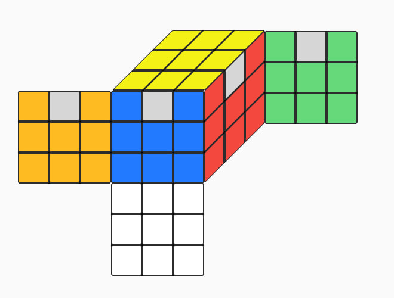
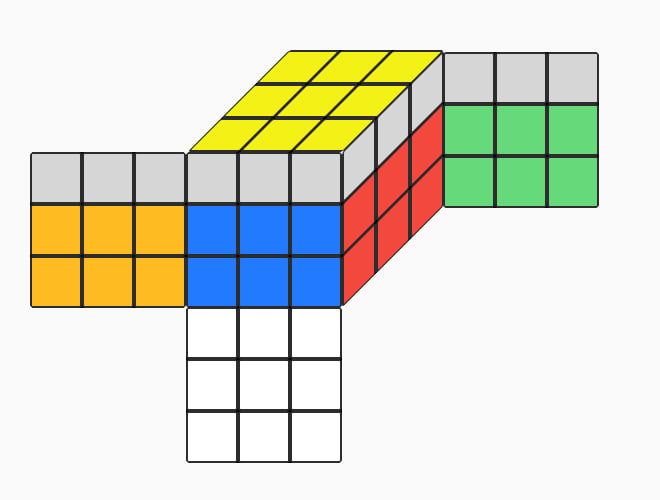

This method consists of blockbuilding the F2L alg-free, and using algs to solve the last layer in a variety of ways depending on the scenario,
there are a total of 86 cases which can be solved in 86 or less algs since many cases are mirrors/inversions.
Can also be viewed as a programming switch of substeps to get the most of your learned algs
1. Solve two opposite 1x2x3 blocks (as in Roux, any order)
2. Solve last 2 edges of F2L (the floor). [Additional notes]
3.2 If the edges are oriented do COLL, as in 3.1 (42 algs, PLL skip 1/12 chance)
4.2 EPLL (4 algs of ELL)
3.3 If the corners are oriented but not permuted do OLL (3 algs of ELL namely X, H or big fish).
4.3 PLL (21 algs - 4 ELL - 2 COLL = 15)
3.4 If the corners are solved (oriented & permuted) do ELL, same as 3.1 (29 algs)